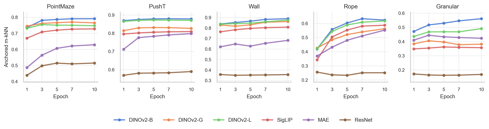
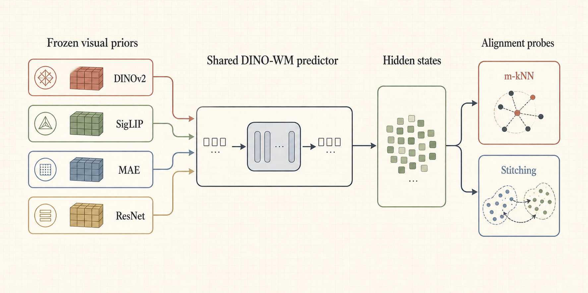
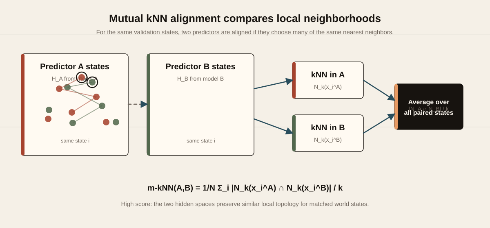
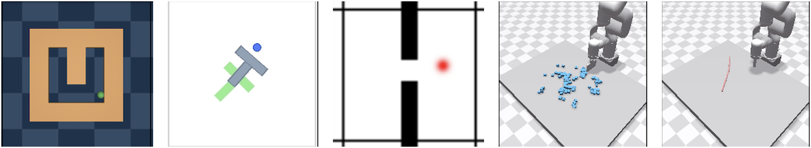
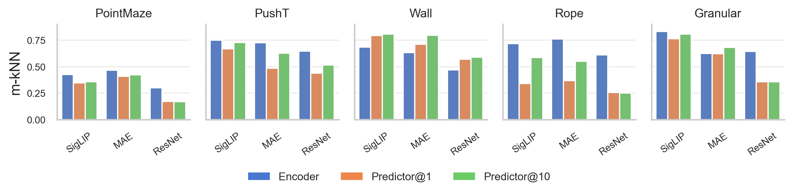
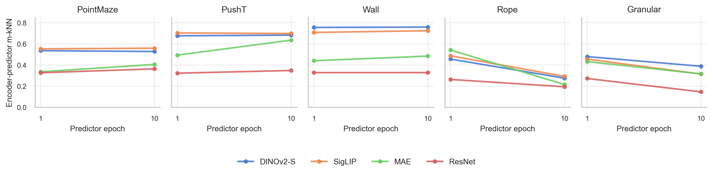

Predictor Geometry Aligns
Across training, ViT-based DINO-WM predictors show stronger local neighborhood alignment than the ResNet baseline.

NeurIPS 2026 submission
We test whether DINO-WM predictors built on different frozen visual encoders develop comparable latent geometry after learning the same action-conditioned dynamics.
If different world models learn increasingly similar latent geometry, then their internal states may be comparable in a meaningful way. This makes representation alignment a concrete object of study, rather than only a metaphor about similar understanding.
The page keeps the argument simple: different frozen encoders feed the same DINO-WM training setup, and we ask whether the predictor states move toward a shared transition-compatible structure.


The evaluation spans navigation, contact-rich manipulation, and deformable dynamics: PointMaze, PushT, Wall, Granular, and Rope.

Across training, ViT-based DINO-WM predictors show stronger local neighborhood alignment than the ResNet baseline.

Figure 5 and Figure 6 address the main alternative explanation: maybe the predictors only inherit or recover frozen encoder geometry.


Under a shared transition objective, strong ViT-based predictors become more geometrically compatible in hidden-state space.
Encoder-control analyses show that predictor states transform frozen visual features and later recover cross-model alignment in predictor space.
ResNet remains separated from ViT-based predictors, suggesting that Platonic-like convergence depends on architectural and interface compatibility.
This page argues for a convergence tendency, not a universal law. The evidence is strongest for ViT-based world-model predictors trained under comparable visual-action prediction settings.
ResNet remains a boundary case rather than an exception to hide. Stitching provides a secondary functional check, but the main argument here stays centered on predictor geometry and encoder-inheritance controls.
@misc{prhwm2026,
title = {Platonic Representation Hypothesis on World Models},
author = {Anonymous Author(s)},
year = {2026},
note = {NeurIPS 2026 submission}
}